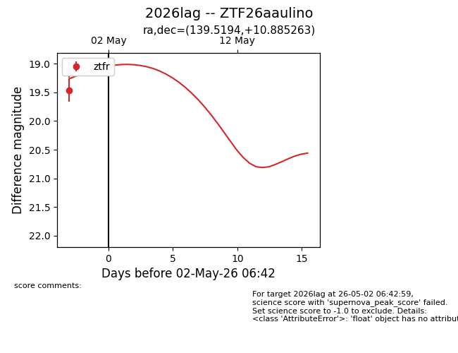
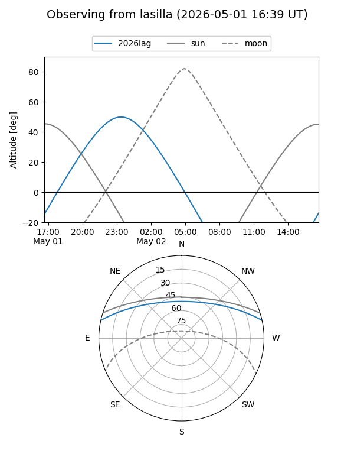
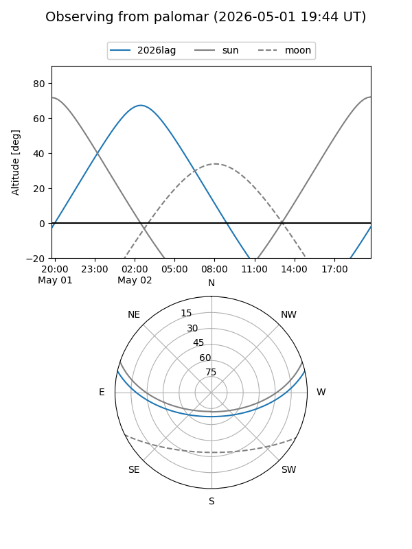
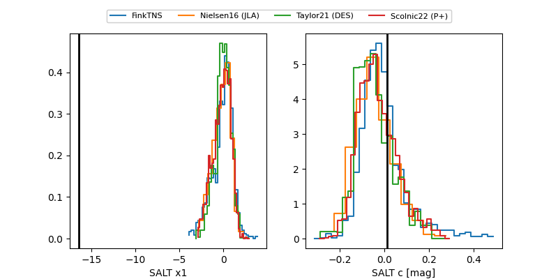

2026lag
Target 2026lag at 2026-05-02 06:53
Aliases and brokers:
FINK: link
Lasair: link
ALeRCE: link
TNS: link
YSE: link
alt names
ZTF26aaulino (ztf,fink_ztf)
2026lag (tns,yse)
Coordinates:
equatorial (ra, dec) = 139.5194,+10.88526
equatorial (HMS+DMS) = 09:18:04.67,+10:53:06.95
galactic (l, b) = (220.1153,+37.43989)
Flags:
Photometry:
last ztfr=19.04
3 ztfr detections
Lightcurve

Visibility


Additional plots
